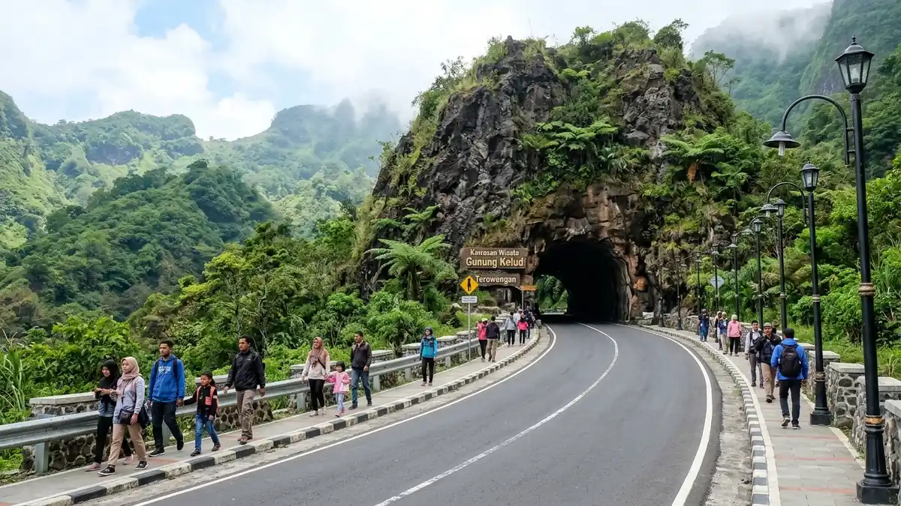

Daftar Isi Panduan
- Rangkuman Info Gunung Kelud (Tabel Informasi Utama)
- Rute dan Jalur Pendakian Gunung Kelud
- Waktu Terbaik Berkunjung dan Catatan Cuaca
- Keselamatan: Cek Status Gunung Api Sebelum Berangkat
- Perhatian: Jadwal Event di Kawasan Kelud
- Menggabungkan Wisata Kelud dengan Kuliner dan Penginapan
- Pertanyaan yang Sering Diajukan (FAQ)
Kediri Event — Gunung Kelud berketinggian sekitar 1.731 mdpl dengan pintu masuk utama di Desa Sugihwaras, Kecamatan Ngancar, Kabupaten Kediri, sekitar 45 menit sampai 1 jam dari pusat Kota Kediri, dengan tiket masuk yang berkisar Rp10.000-Rp15.000 dan jam operasional yang berbeda-beda antar sumber sehingga perlu dikonfirmasi di loket.
Ringkasan Inti Wisata Gunung Kelud:
- Gerbang Wisata Utama: Titik awal kunjungan dan pendakian terletak di Desa Sugihwaras, wilayah Kecamatan Ngancar, Kabupaten Kediri.
- Ketinggian & Puncak: Gunung ini menjulang sekitar 1.731 mdpl dan dikenal luas lewat pesona tiga puncaknya: Puncak Kelud, Puncak Sumbing, serta Puncak Gajahmungkur.
- Kisaran Biaya: Tiket masuk tercatat Rp10.000-Rp15.000 per orang dan ojek ke kawah sekitar Rp30.000-Rp50.000 pulang pergi, tergantung sumber dan hari kunjungan.
- Musim Terbaik: Musim kemarau, sekitar bulan April sampai Oktober, dinilai sebagai waktu ideal untuk menikmati langit cerah dan kawah bebas kabut pekat.
- Catatan Event Spesial: Pada Minggu, 1 November 2026, kawasan ini digunakan untuk ajang lomba lari Kelud Vertical Challenge sejak pukul 04.00 WIB pagi.
Rangkuman Info Gunung Kelud
Lokasi pintu masuk, ketinggian, jarak tempuh dari Kota Kediri, tiket masuk, ongkos ojek, dan jam operasional merupakan enam informasi pokok yang perlu dipahami sebelum meluncur ke lereng Gunung Kelud:
| Komponen | Informasi Lengkap |
|---|---|
| Lokasi Pintu Masuk | Desa Sugihwaras, Kecamatan Ngancar, Kabupaten Kediri, Jawa Timur |
| Ketinggian | Sekitar 1.731 meter di atas permukaan laut (mdpl) |
| Jarak dari Pusat Kota Kediri | Sekitar 45 km, dengan waktu tempuh berkendara 45 menit sampai 1 jam |
| Tiket Masuk | Sekitar Rp10.000 - Rp15.000 per orang (berpotensi lebih tinggi pada akhir pekan atau libur nasional) |
| Ojek ke Area Kawah | Sekitar Rp30.000 - Rp50.000 per orang untuk rute pulang pergi (PP) |
| Jam Operasional Wisata | Sekitar pukul 07.00 atau 08.00 hingga 16.30 atau 17.00 WIB (dapat bervariasi antar pengelola) |
Rute dan Jalur Pendakian Gunung Kelud
Jalur resmi menuju kawasan kawah dimulai dari pintu masuk wisata di Desa Sugihwaras, Kecamatan Ngancar. Dari titik ini, wisatawan maupun pendaki dapat memilih untuk berjalan kaki santai atau memanfaatkan armada ojek lokal untuk menjangkau area dekat kawah, termasuk melintasi terowongan bersejarah.

Jalur aspal mulus dan terowongan bebatuan legendaris yang mengantarkan wisatawan langsung menuju kawah Gunung Kelud.
- Akses Kendaraan: Pengunjung berangkat dari pusat Kota Kediri menuju arah Wates atau Pesantren, melanjutkan ke Ngancar hingga menjumpai gerbang wisata Gunung Kelud.
- Kondisi Jalur: Jalan menuju pelataran kawah sudah dilapisi aspal halus sehingga ramah dilintasi kendaraan roda dua, roda empat, maupun ditempuh dengan berjalan kaki.
- Terowongan Menuju Kawah: Menjelang bibir kawah, pengunjung akan melewati lorong terowongan batu yang cenderung temaram dan dapat becek saat musim penghujan.
- Fenomena Jalan Misteri: Berada sekitar 4 km dari loket retribusi, terdapat medan magnet unik tempat kendaraan dapat terlihat bergerak merayap sendiri meski mesin dimatikan.
- Pos Registrasi Pendaki: Bagi yang berencana mendaki tebing atau puncak sekitar, dianjurkan melapor di pos pendakian resmi. Besaran tarif simaksi pernah tercatat Rp20.000 pada arsip lama sehingga disarankan konfirmasi ulang di basecamp setempat.
Waktu Terbaik Berkunjung dan Catatan Cuaca
Musim kemarau, yang umumnya berlangsung sekitar rentang April sampai Oktober, dinilai sebagai momen emas untuk menjelajahi kemegahan Gunung Kelud. Pada rentang bulan ini, langit pagi cenderung jernih dengan suhu sejuk menyegarkan dan kabut tipis yang menambah kesan dramatis pada dinding kaldera.
Memasuki akhir Oktober dan awal November, intensitas peluang hujan mulai meningkat di kawasan pegunungan Jawa Timur. Curah hujan berpotensi membuat tanjakan beraspal dan lantai terowongan menjadi lebih licin. Selalu siapkan jas hujan praktis, kenakan alas kaki dengan daya cengkeram optimal, serta periksa prakiraan cuaca BMKG sebelum memulai perjalanan.
Keselamatan: Cek Status Gunung Api Sebelum Berangkat
Mengingat Gunung Kelud merupakan salah satu gunung api strato paling aktif di Pulau Jawa, aspek keselamatan wajib ditempatkan pada prioritas tertinggi. Sebelum bepergian, pastikan memantau status aktivitas vulkanik melalui saluran terpercaya:
- Kanal MAGMA Indonesia: Cek tingkat aktivitas gunung api terkini melalui website atau aplikasi resmi PVMBG (Pusat Vulkanologi dan Mitigasi Bencana Geologi).
- Instruksi Petugas Lapangan: Taati sepenuhnya seluruh arahan pos jaga dan hindari melintasi pagar pembatas zona terlarang di bibir kawah.
- Waspadai Cuaca Ekstrem: Tunda perjalanan apabila pengelola mengeluarkan edaran penutupan sementara akibat badai, longsor, atau peningkatan aktivitas gas vulkanik.
- Perlengkapan Mandiri: Bawa bekal air minum yang memadai, camilan berenergi, kacamata penahan debu, serta jaket penahan angin karena embusan angin di puncak kawah cukup kencang dan bersuhu dingin.
- Wajah Baru Pasca-2014: Peristiwa erupsi dahsyat 2014 telah merombak total struktur kubah lava anak kelud, sehingga panorama danau kawah saat ini memiliki karakteristik berbeda dari dokumentasi lawas.
Perhatian: Jadwal Event di Kawasan Kelud
Pada hari Minggu, 1 November 2026, Gerbang Wisata Gunung Kelud difungsikan sebagai lokasi pelepasan (flag-off) ajang lomba lari bergengsi tingkat regional bertajuk Kelud Vertical Challenge yang dimulai sejak pukul 04.00 WIB dini hari.
Bila Anda berencana melakukan liburan tamasya santai bersama keluarga pada akhir pekan tersebut, disarankan mengonfirmasi pengaturan akses jalan dan kantong parkir kepada pengelola wisata agar tidak terjebak kemacetan. Anda dapat membaca panduan lengkapnya pada tautan panduan Kelud Vertical Challenge 2026 atau memantau rangkuman agenda di event weekend Kediri akhir pekan ini.
Menggabungkan Wisata Kelud dengan Kuliner dan Penginapan
Agar agenda pelesiran lebih berkesan, wisatawan dari luar daerah dapat memadukan petualangan alam di Gunung Kelud dengan menikmati ragam kuliner legendaris dan bermalam di pusat keramahan Kediri:
- Wisata Kuliner Khas: Setelah menuruni lereng sejuk Ngancar, nikmati hidangan hangat pecel tumpang atau soto branggahan lezat lewat panduan kuliner di artikel rekomendasi kuliner Kediri.
- Pilihan Akomodasi Nyaman: Temukan deretan hotel berbintang maupun penginapan ramah kantong di sekitar Simpang Lima Gumul dan Stadion Brawijaya agar mobilitas Anda tetap praktis.
- Jelajah Destinasi Lain: Lengkapi liburan Anda dengan mengunjungi Monumen SLG, Kawasan Selomangleng, atau Museum Airlangga di jantung kota.
Pertanyaan yang Sering Diajukan (FAQ)

Ditulis oleh: Erlang Sinatrya Putra Yusya
Event Content Specialist & EditorSpesialis liputan destinasi wisata alam, rute pendakian pegunungan, agenda festival, serta aktivitas outdoor di Kediri Raya. Menghadirkan ulasan faktual dan panduan perjalanan yang aman bagi para pelancong.
Profil Kediri Event